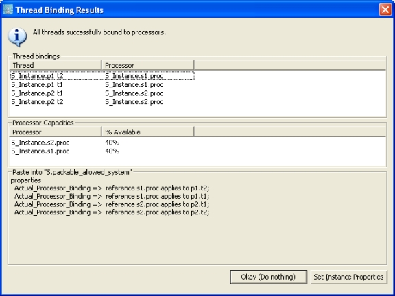

Previous
Next
Previous
Next 
| 9.6 Thread–Processor Binding |
This plug-in is invoked by selecting an instance model and running “Analyses > Scheduling >
Bind and schedule threads.” This plug-in attempts to bind thread instances to processor
instances in the system instance, taking into account such factors as the threads’ period and
deadline, the processor’s speed and scheduling policy, and constraints imposed by the
allowed_processor_binding and not_collocated properties. If the threads can be
scheduled onto existing processors, then the plug-in reports back the thread–processor
bindings and the resulting processor utilizations. The user can then have the plug-in introduce
the appropriate actual_processor_binding properties definitions into the instance model
or declarative model (as contained property definitions). The plug-in ignores the value of any
existing actual_processor_binding property associations; to force a thread to run on a
specific processor use the allowed_processor_binding property.
The plug-in uses several property definitions from the SEI property set:
property set SEI is
...
-- A thread references the processor that was used to determine
-- the thread's compute time. Dividing the compute time by this
-- processor's cycle time gives the number of compute cycles the
--thread needs. A Thread can inherit the value from its enclosing
-- thread group, process, or system.
reference_processor: inherit classifier (processor)
applies to (thread, thread group, process, system, device);
-- Alternatively, a thread can rely on a default global reference
-- cycle time, in which case we interpret its timing results with
-- respect to that global reference. The global reference is a
-- 200MHz processor.
reference_cycle_time: constant Time => 5000 ps;
-- Time per clock-cycle. Default is 200MHz processor.
cycle_time: time => 5000 ps applies to (processor);
...
end SEI;
The plug-in uses the standard Period, Deadline, and Compute_Execution_Time
properties for each thread. Because it needs a processor-independent notion of computation
time, it converts each thread’s execution time into a count of clock cycles. To do this, it first
tried to find a SEI::reference_processor property value for the thread. If found, the plug-
in looks up the SEI::cycle_time property of the referenced processor classifier. If the
thread does not have a reference processor specified, the plug-in tries to use a global reference
value specified by the constant SEI::reference_cycle_time.
For each thread in the system, the plug-in uses the standard Scheduling_Protocol
property
as well as the SEI::cycle_time property. The plug-in understands the EDF and RMS
scheduling protocols; if no protocol is specified the plug-in assumes EDF. You may have to
update your Aadl_Project property set so that the Supported_Scheduling_Protocols
enumeration type includes the literals EDF and RMS.
The binding behavior can be constrained by using the
Allowed_Processor_Binding, Allowed_Processor_Binding_Class, and
Not_Collocated property values on threads. The first allows a thread
to declare the specific processor instances to which it may be bound,
as well as specific system instances that contain processors to which
it may be bound. The second allows a thread to more generally declare
threads to be acceptable based on their classifier, or based on the
classifier of the system that contains them. The values of the
properties Allowed_Processor_Binding and
Allowed_Processor_Binding_Class interact: for example a thread can
declare that it can only be bound to processor of a certain classifier
type that is contained within a specific system by using
Allowed_Processor_Binding_Class to name the processor classifier, and
Allowed_Processor_Binding to reference the specific system instance.
Finally, the Not_Collocated property allows a thread to declare those
threads which should not be bound to the same processor as it is.
When all the threads of a system cannot be bound to processors, the
plug-in puts up a simple dialog box announcing this fact (unfortunately
we are unable to provide feedback about why system cannot be bound).
When the threads can be bound, the plug-in displays a dialog box
showing the binding results and the remaining availability of each
processor; see Figure 28. The bottom portion of the dialog box contains
the textual AADL properties clause that could be copied into the
textual declaration of the system to bind the threads. The clause uses
contained property associations to define the Actual_Processor_Binding
property for the bound threads. The user can have the plug-in insert
these property values into the instance model by clicking the “Set
Instance Properties” button.

Figure 28: Dialog box showing example successful thread binding results.